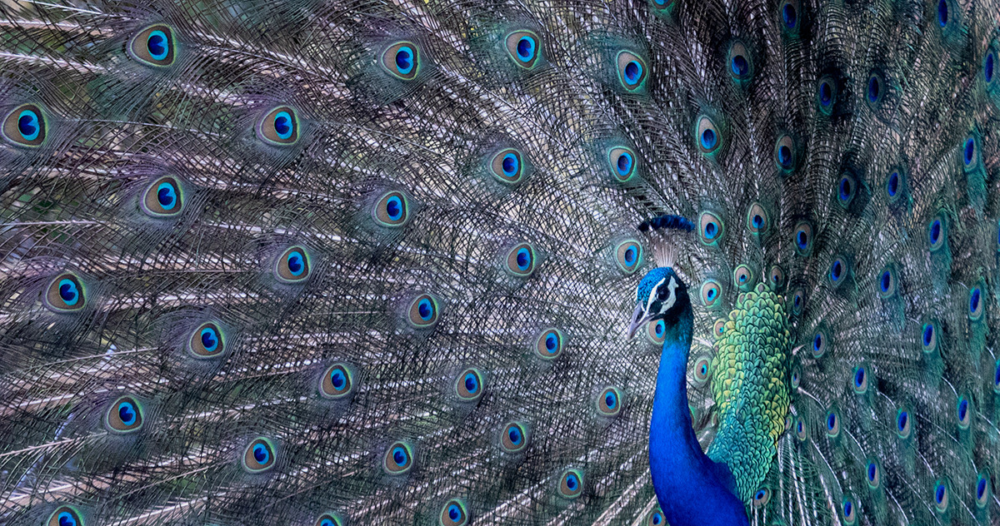

Nature Guide Ceylon - Home
Sri Lanka's wildlife is as varied as the island itself, ranging from elephants and leopards to marine
life and a vast number of different birds, and Sri Lanka is now one of the best places in the world to
see whales, including the mighty blue whale.
Like many islands, Sri Lanka boasts a high number of endemic species, animals and plants found nowhere
else on Earth. The country is also regarded as one of the world's top five hotspots for biodiversity,
testament to the sheer number of species which call the tear drop isle home. Read on to learn what you
can discover in some of Sri Lanka's best national parks.

Types Of Animals In Sri Lanka
Five things you should know about Sri Lankan wildlife
1. Best for Big Game Safaris outside Africa
Sri Lanka is the Best for Big Game Safaris outside Africa. Its Big Five are the Elephant, Leopard, Sloth Bear,
Blue and Sperm Whale. Few countries can rival its combination of Big Game safari animals, species densities and
tourism infrastructure. It is undoubtedly the Ultimate Island Safari.
2. Best for Blue Whale and Top Ten for Sperm Whales
Sri Lanka is Best for Blue Whale, the largest animal that has ever lived on earth. Mirissa and Trincomalee offer
the best Blue Whale viewing in the world.Kalpitiya is among the top ten sites in the world for the Sperm Whale,
the biggest toothed whale.Mirissa offers the best chance in the world to see both Blue and Sperm Whales on the
same whale watching.
3. The Gathering of Elephants
The largest seasonally recurring concentration of wild elephants takes place between July to September at Minneriya
(and Kaudulla) National Park. Over 300 elephants may gather on the seasonally drying lake bed. Listed by Lonely
Planet as among the Top Ten wildlife spectacles in the world.Uda Walawe National Park is the only site in the world
where wild elephants are guaranteed on every game drive.
4. Best for Leopards
Yala National Park is the best place in the world for seeing and photographing leopards. Some areas in Block 1 have an
average density of a leopard per square kilometer.
5. Sinharaja Bird Wave
The Sinharaja Bird Wave is the largest, longest studied and offers the longest viewing of
bird waves.
Mammals
Sri Lanka's diverse mammalian tapestry features iconic species such as the majestic Sri Lankan Elephant, thriving
in protected reserves. The elusive Purple-faced Langur, shares its habitat
with the diminutive Rusty-spotted Cat, one of the world's smallest wildcats, highlighting the spectrum of sizes
and habitats within Sri Lanka's rich mammalian biodiversity.
Reptiles
Sri Lanka's reptilian kingdom boasts the striking Indian Rock Python, a constrictor found in various ecosystems.
The venomous Green Pit Viper, with its vibrant hues, lurks in dense vegetation, exemplifying the island's diverse
reptilian residents. Turtles and crocodiles further contribute to the fascinating reptilian array inhabiting Sri
Lanka's varied landscapes.
Amphibians
In Sri Lanka's lush and vibrant ecosystems, the Golden-eyed Tree Frog, with its captivating colors, and Kelaart's
Dwarf Toad, stand out in the island's rich amphibian diversity. These fascinating showcasing the interconnectedness
of Sri Lanka's ecosystems and amphibian life.
Birds
Sri Lanka's skies are , such as the resplendent Sri Lanka Junglefowl, a symbol of national pride.
The melodic Yellow-fronted Barbet, Sri Lanka Whistling Thrush further
enrich the avian tapestry. contributing to Sri Lanka's reputation
as a birdwatching paradise.
Fish
Sri Lanka's aquatic ecosystems harbor a diverse array of fish species, Ceylonese Combtail,
showcasing colors beneath the water's surface. Coastal waters teem with marine life.
Examples such as parrotfish, clownfish, and moray eels contribute to the
island's underwater biodiversity, making Sri Lanka a haven for marine diversity.
Co-Partners